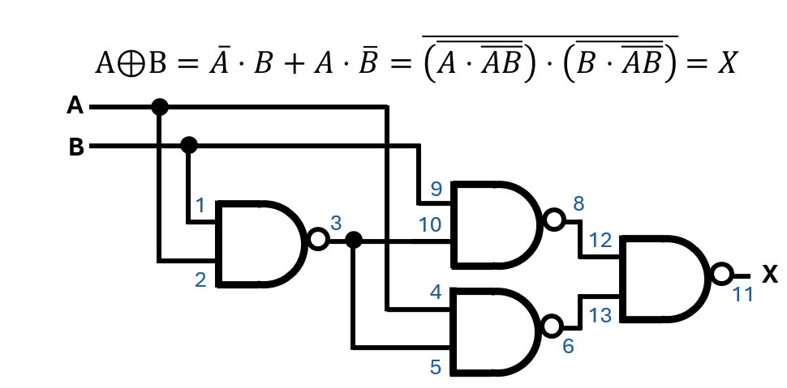
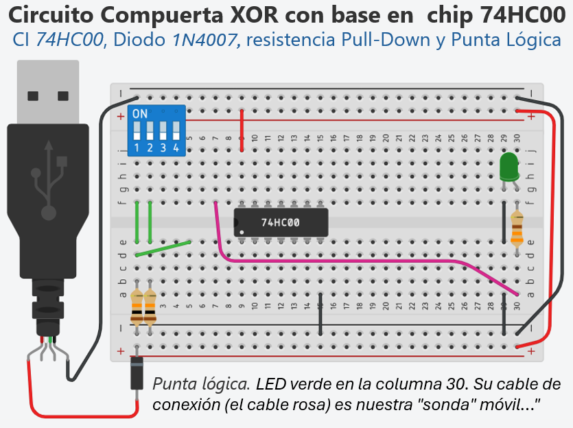
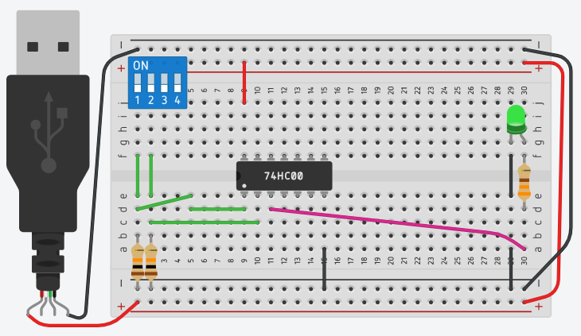
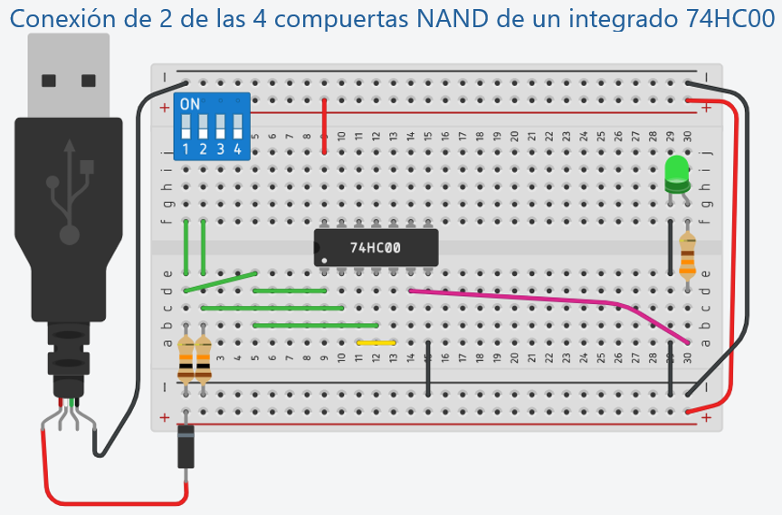
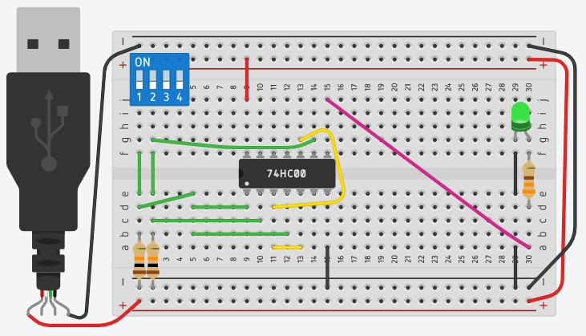
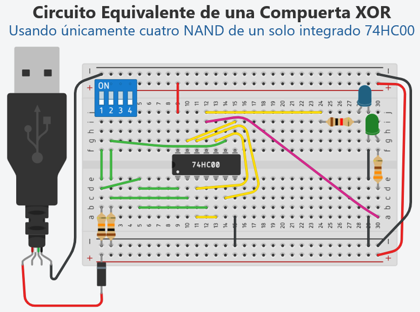
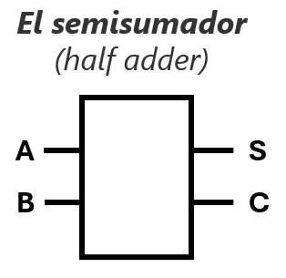
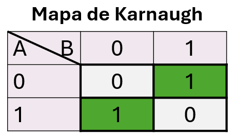
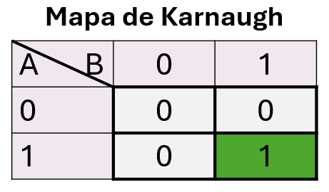

Unidad 2: Lógica Digital - Lección 20 (Laboratorio Final)
🔌 Laboratorio 2: De la XOR (1 salida) al Semisumador (2 salidas)
🎯 Objetivos de esta práctica
- Construir físicamente (en simulador o protoboard) una compuerta XOR utilizando únicamente compuertas NAND (chip 74HC00).
- Verificar experimentalmente, paso a paso, que el comportamiento del circuito coincide con la tabla de verdad de la XOR.
- Comprobar la universalidad de la compuerta NAND como bloque fundamental de construcción.
- Desarrollar habilidades de diagnóstico y resolución de problemas (troubleshooting) en circuitos digitales.
- Identificar la relación entre el circuito XOR y la suma de bits (preparación para el half adder y la Unidad 3).
🧰 Materiales del Ingeniero
Antes de comenzar, asegúrate de tener todos los componentes listos. Trabajar ordenadamente y con el material adecuado es la primera regla del laboratorio.
- 1 × Circuito integrado 74HC00 (4 compuertas NAND de 2 entradas).
- 1 × Protoboard (placa de pruebas).
- 2 × Interruptores DIP (o 2 pulsadores / interruptores deslizantes).
- 2 × Resistencias de 10 kΩ (para pull-down de los interruptores).
- 1 × LED verde (para usar como punta de prueba en los pasos intermedios).
- 1 × LED azul (para la salida final XOR).
- 2 × Resistencias de 330 Ω (limitadoras para los LEDs).
- Cables de conexión (varios colores, preferiblemente).
- Fuente de alimentación de 5 V (puede ser el cargador del telefono, 3 pilas AA en serie, una batería de 5V o la alimentación del simulador).
📌 Nota sobre el semisumador: En esta práctica construirás físicamente solo la compuerta XOR (una salida). El semisumador (dos salidas) lo exploraremos de manera conceptual mediante diagramas, tablas de verdad y mapas de Karnaugh. No necesitas componentes adicionales; todo se realiza con el mismo chip 74HC00 y los elementos ya listados.
📌 Nota sobre la simulación: Si no dispones de los componentes físicos, puedes realizar este laboratorio en un simulador como Tinkercad o Falstad. En ese caso, los materiales serán virtuales pero el procedimiento y la verificación son idénticos. Te recomendamos usar Tinkercad por su facilidad para conectar y visualizar los LEDs.
Contar con el inventario listo sobre tu mesa de trabajo es la primera señal de un arquitecto de hardware profesional. Sin embargo, en el laboratorio, la intención creativa debe estar blindada por el protocolo de seguridad. Un solo cable mal ubicado o un descuido en la polaridad puede transformar una obra maestra en un suspiro de humo y componentes inservibles. Para garantizar que tu viaje desde la lógica abstracta hasta el silicio físico sea un éxito absoluto, debemos primero internalizar las leyes innegociables de la mesa de trabajo. Pasemos a las Reglas de Oro, el código de conducta que protegerá tanto a tu equipo como a tu aprendizaje.
⚡ Reglas de Oro del Laboratorio
- Desconecta la fuente de alimentación cada vez que vayas a modificar el cableado. Conectar o desconectar cables con la energía puesta puede causar cortocircuitos y dañar los chips.
- Respeta la polaridad de los LEDs. El ánodo (pata larga) va hacia la salida del chip; el cátodo (pata corta) va a tierra a través de la resistencia de 330 Ω.
- Verifica la alimentación del chip: Asegúrate de que el pin 14 esté en +5V y el pin 7 en GND antes de encender. ¡Una inversión de polaridad destruye el integrado!
1. 🔌 Práctica: Construyendo la XOR (una salida)
En esta primera parte del laboratorio te convertirás en un ingeniero de montaje. Seguirás un procedimiento paso a paso para construir, con un solo chip 74HC00, el circuito de la compuerta XOR. Verificarás cada etapa con una punta de prueba (LED verde) y, al final, comprobarás que el LED azul se enciende exactamente cuando las dos entradas son diferentes. Es la misma función que resolvía el problema de la escalera en la Lección 6, pero ahora implementada de forma elegante y compacta.
Objetivo de esta parte: Comprobar experimentalmente la universalidad de la compuerta NAND y familiarizarte con el ruteo de señales en un circuito real.
🧩 La escalera de dos niveles (Lecciones 6 y 18)
¿Recuerdas el problema de encender una luz desde dos interruptores, uno al inicio y otro al final de una escalera? Esa función es exactamente la XOR. En la Lección 6 lo resolvíamos usando interruptores de tres vías (SPDT) y en la Lección 18 lo resolvíamos usando compuertas AND, OR y NOT. Ahora, con lo que hemos aprendido, podemos implementar la solución usando únicamente 4 compuertas NAND dentro de un solo chip 7400. ¡Eso es eficiencia de ingeniero!
Este circuito es la versión compacta y elegante de aquella solución inicial. Puedes montarlo en tu protoboard y verificar que la lámpara se enciende justo cuando los interruptores están en posiciones distintas.
Haber condensado una solución compleja en un solo circuito integrado es un hito de eficiencia, pero el espíritu del ingeniero siempre busca el límite de la optimización. Antes de pasar a la acción física, analicemos la arquitectura de nuestro diseño para entender por qué la XOR impone sus propias reglas de espacio y cantidad.
🤔 ¿Por qué 4 NAND y no menos?
La XOR es una función fundamentalmente compleja: no puede implementarse con menos de 4 compuertas NAND. Esto se debe a que su expresión booleana no es simplificable a una forma que requiera menor número de operaciones NAND. Es un excelente ejemplo de cómo la complejidad lógica se traduce en número de componentes.
La universalidad de la compuerta NAND nos permite implementar cualquier función lógica utilizando únicamente este tipo de compuerta. Mientras que un diseño tradicional de la XOR (\(A \oplus B\)) requeriría tres chips diferentes (NOT, AND y OR), gracias a las leyes de De Morgan podemos optimizar el hardware y construirla con un solo circuito integrado 74HC00, que contiene cuatro compuertas NAND. A continuación, realizaremos la simulación paso a paso en Tinkercad, verificando cada compuerta antes de continuar.

Fig. 1: Relación entre la conexión de las cuatro compuertas NAND y el patillaje del 7400 cuya numeración sigue el estándar: pin 7 es GND, pin 14 es VCC.
📍 Identificación de pines
- Compuerta 1: A1 = pin 1, B1 = pin 2, X1 = pin 3
- Compuerta 2: A2 = pin 4, B2 = pin 5, X2 = pin 6
- Compuerta 3: A3 = pin 9, B3 = pin 10, X3 = pin 8
- Compuerta 4: A4 = pin 12, B4 = pin 13, X4 = pin 11
- Alimentación: VCC = pin 14, GND = pin 7
Dominar el ruteo de señales es solo el primer paso; un verdadero arquitecto de hardware debe ser capaz de 'ver' lo que sucede en el interior del silicio. Antes de sumergirnos en la complejidad de nuestra malla lógica, vamos a preparar un instrumento de diagnóstico esencial que será tu mejor aliado para cazar errores y validar la salud de tu diseño en tiempo real.
🔍 El Arma Secreta: Tu Punta Lógica Casera
Antes de empezar a cruzar cables como locos, vamos a preparar nuestra herramienta de diagnóstico. Instala tu LED verde en la columna 30 con su resistencia a Tierra (GND). Conecta un cable largo y flexible (como el rosa de la imagen) al ánodo del LED.
Ese cable rosa será tu "sonda" móvil. Al tocar con él los diferentes pines del chip, el LED verde se encenderá si hay un 1 lógico (HIGH) y se apagará si hay un 0 lógico (LOW). ¡Esta es la única forma de saber qué está pasando dentro del laberinto de silicio!

Fig. 2: El Tablero de Juego Listo. Observa las 3 reglas de oro aplicadas:
1. Seguridad: El Diodo 1N4007 protege la entrada de voltaje del USB.
2. Estabilidad: Las resistencias Pull-Down de 10kΩ evitan los estados flotantes en los interruptores 1 y 2.
3. Diagnóstico: La Punta Lógica (LED verde) esperando a que uses el cable rosa para auditar los pines de salida de las compuertas en cada paso.
Contar con un instrumento para visualizar lo invisible es una ventaja estratégica, pero en la ingeniería de precisión, ver no es suficiente: es necesario documentar. Tu punta lógica será tus ojos dentro del chip, pero la Bitácora de Auditoría será el registro oficial de tu rigor técnico. Antes de que los electrones comiencen a fluir por el laberinto de NANDs, preparemos el espacio donde capturarás cada veredicto lógico, asegurando que tu montaje no sea producto del azar, sino de una validación sistemática y profesional.
📋 Preparando la Bitácora de Auditoría
Como todo buen ingeniero de pruebas (QA), no vas a confiar en tu memoria. Vas a construir tu circuito por etapas y documentar el flujo de la señal en tiempo real.
Copia esta tabla vacía en tu cuaderno antes de tocar el primer cable:
| Entradas (DIP) | Paso 1 (\(P\)) | Paso 2 (\(Q\)) | Paso 3 (\(R\)) | Paso 4 (XOR Final) | |
|---|---|---|---|---|---|
| B | A | Pin 3 | Pin 6 | Pin 8 | Pin 11 |
| 0 | 0 | _ | _ | _ | _ |
| 0 | 1 | _ | _ | _ | _ |
| 1 | 0 | _ | _ | _ | _ |
| 1 | 1 | _ | _ | _ | _ |
Tu Misión: Al terminar cada uno de los 4 pasos siguientes, detente, mueve tus interruptores A y B por las 4 combinaciones posibles (00, 01, 10, 11), mira qué hace tu LED Verde (Punta Lógica) y anota un "1" (Encendido) o un "0" (Apagado) en la columna correspondiente de tu cuaderno.
🔹 Paso 1: Primera NAND – Generar \(P = \overline{A \cdot B}\)
Conexiones:
- Pin 1 (A1) → Interruptor A
- Pin 2 (B1) → Interruptor B
- Pin 3 (X1) → Salida \(P\) (conectar LED verde como punta de prueba)
Tabla de verificación (Paso 1):
| B | A | \(P = \overline{A \cdot B}\) | LED verde (pin 3) |
|---|---|---|---|
| 0 | 0 | 1 | 🔴 ENCENDIDO |
| 0 | 1 | 1 | 🔴 ENCENDIDO |
| 1 | 0 | 1 | 🔴 ENCENDIDO |
| 1 | 1 | 0 | ⚫ APAGADO |
✅ Si tu simulación coincide, avanza al Paso 2. De lo contrario, revisa alimentación y conexiones.

Fig. 3: Verificación de la primera NAND: el LED verde debe apagarse solo cuando A=1 y B=1.
🔹 Paso 2: Segunda NAND – Generar \(Q = \overline{A \cdot P}\)
Conexiones (manteniendo el Paso 1):
- Pin 4 (A2) → Interruptor A
- Pin 5 (B2) → Pin 3 (\(P\))
- Pin 6 (X2) → Salida \(Q\) (mover el LED verde a este pin)
Tabla de verificación (Paso 2):
| B | A | \(P\) (de paso1) | \(Q = \overline{A \cdot P}\) | LED verde (pin 6) |
|---|---|---|---|---|
| 0 | 0 | 1 | \(\overline{0·1}=1\) | 🔴 ENCENDIDO |
| 0 | 1 | 1 | \(\overline{1·1}=0\) | ⚫ APAGADO |
| 1 | 0 | 1 | \(\overline{0·1}=1\) | 🔴 ENCENDIDO |
| 1 | 1 | 0 | \(\overline{1·0}=1\) | 🔴 ENCENDIDO |
✅ Verifica especialmente el caso B=0, A=1 (LED apagado).

Fig. 4: Verificación de la segunda NAND: el LED se apaga solo con B=0, A=1.
🔹 Paso 3: Tercera NAND – Generar \(R = \overline{B \cdot P}\)
Conexiones (manteniendo pasos anteriores):
- Pin 9 (A3) → Interruptor B
- Pin 10 (B3) → Pin 3 (\(P\))
- Pin 8 (X3) → Salida \(R\) (mover el LED verde a este pin)
Tabla de verificación (Paso 3):
| B | A | \(P\) (de paso1) | \(R = \overline{B \cdot P}\) | LED verde (pin 8) |
|---|---|---|---|---|
| 0 | 0 | 1 | \(\overline{0·1}=1\) | 🔴 ENCENDIDO |
| 0 | 1 | 1 | \(\overline{0·1}=1\) | 🔴 ENCENDIDO |
| 1 | 0 | 1 | \(\overline{1·1}=0\) | ⚫ APAGADO |
| 1 | 1 | 0 | \(\overline{1·0}=1\) | 🔴 ENCENDIDO |
⚠️ Caso crítico: Con B=1, A=1, \(P=0\) → \(R=1\), el LED debe estar ENCENDIDO. Si está apagado, verifica que el pin 10 esté conectado a \(P\) (pin 3) y no a otra señal.

Fig. 5: Verificación de la tercera NAND: el LED se enciende para todas las combinaciones excepto B=1, A=0.
🔹 Paso 4: Cuarta NAND – Salida final \(X = \overline{Q \cdot R}\) (XOR)
Conexiones finales:
- Pin 12 (A4) → Pin 6 (\(Q\))
- Pin 13 (B4) → Pin 8 (\(R\))
- Pin 11 (X4) → Salida final \(X\). Conecta un cable amarillo desde aquí hasta tu LED Azul (Salida Permanente) no olvides agregar la resistencia de 330 Ω y la conexión a tierra o GND.
Tabla de verificación final (XOR):
| B | A | \(Q\) (paso2) | \(R\) (paso3) | \(X = \overline{Q \cdot R}\) | LED Azul (Salida) |
|---|---|---|---|---|---|
| 0 | 0 | 1 | 1 | \(\overline{1·1}=0\) | ⚫ APAGADO |
| 0 | 1 | 0 | 1 | \(\overline{0·1}=1\) | 🔴 ENCENDIDO |
| 1 | 0 | 1 | 0 | \(\overline{1·0}=1\) | 🔴 ENCENDIDO |
| 1 | 1 | 1 | 1 | \(\overline{1·1}=0\) | ⚫ APAGADO |
🎉 El Test Definitivo (Tu Punta Lógica)
Para la confirmación absoluta, toma el cable rosa de tu Punta Lógica (LED Verde) y colócalo también en la pata 11. Al cambiar los interruptores A y B, ambos LEDs (el azul y el verde) deberán encender y apagar al mismo tiempo. ¡El LED verde te confirma que la señal cruzó todo el laberinto de NANDs de forma exitosa!

Fig. 6: El circuito final comprobado. Al colocar la Punta Lógica en la pata 11, confirmamos que todo el circuito funciona como una sola compuerta XOR. Observa el Diodo 1N4007 protegiendo la fuente y el cableado ordenado.
✅ Verificación y cierre
Con este procedimiento has construido una compuerta XOR utilizando únicamente cuatro NAND de un solo integrado 74HC00. Cada paso fue verificado individualmente, garantizando que el circuito final funciona correctamente. Este mismo principio se aplica para construir cualquiera de las siete compuertas básicas a partir de NAND, y sienta las bases para los circuitos combinacionales de la Unidad 3.
Ver que el LED azul enciende correctamente es un momento de celebración, pero como formadores, nuestra misión no termina en el resultado final. El verdadero aprendizaje ocurre en el trayecto de la señal, no solo en la meta. Pasemos a una reflexión pedagógica sobre cómo transformar un simple chequeo técnico en una auditoría profunda del pensamiento lógico de tus estudiantes.
🍎 Rincón del Docente: Evaluando el "Por Qué", no solo el "Qué"
Como maestro, es muy tentador pasar por las mesas de laboratorio y simplemente mirar si el LED Azul del estudiante enciende cuando los interruptores están en 0-1 y 1-0. Si enciende, le pones un 10. ¡Esa es una evaluación técnica, no una evaluación de ingeniería!
La "Prueba del Cable Rosa" (Auditoría Inversa)
Para saber si tus estudiantes realmente entendieron el flujo lógico del Álgebra de Boole a través de las compuertas NAND, no evalúes el final; evalúa el medio. Aplica esta dinámica en tu aula:
- El Reto: Pídele al estudiante que ponga sus interruptores en
A=1yB=1. - La Pregunta Sorpresa: Antes de que mueva la punta lógica (cable rosa), pregúntale: "¿Estará encendido o apagado el LED verde si lo conecto al Pin 6 (salida Q)?".
- El Razonamiento: El estudiante no debe adivinar. Debe mirar el circuito y decir: "Bueno, si A y B son 1, la primera NAND (Pin 3) dará 0. Si el Pin 3 es 0 y entra a la segunda NAND junto con A(1), la salida en el Pin 6 debe ser 1 (porque basta un 0 para que la NAND dé 1). Así que el LED encenderá."
- La Verificación: Ahora sí, que conecte el cable rosa al Pin 6. Si el LED enciende, ¡su lógica matemática fue perfecta!
La lección: No evalúes si el circuito funciona; evalúa si el estudiante sabe por qué funciona en cada milímetro de cable. Esa es la diferencia entre formar ensambladores y formar pensadores.
⚠️ Dificultades comunes y cómo resolverlas
En un laboratorio real, los errores son parte del aprendizaje. A continuación, se presentan las dificultades más frecuentes al construir compuertas con NAND y las estrategias para identificarlas y corregirlas.
| Síntoma (Dificultad) | Diagnóstico (Posible causa) | Solución del Ingeniero |
|---|---|---|
| El LED no enciende nunca | Falta alimentación (VCC o GND), o el LED está invertido. | Mide 5V entre los pines 14 y 7. Voltea el LED. |
| Paso 1: La salida (P) es siempre 1 | Entradas A o B "flotando" por falta de resistencias pull-down. | Añade resistencias de 10 kΩ de cada interruptor a GND. |
| El circuito da "1" aunque olvidé conectar un cable de entrada. | ¡El fantasma del TTL (Floating High)! Los chips asumen que un pin desconectado es un "1". | Apaga todo y revisa visualmente que cada pin de entrada de las 4 compuertas tenga un cable conectado. |
| La XOR final no coincide con la tabla | Una señal intermedia (Q o R) está mal conectada (cruzaste Árbol 1 con 2). | Usa tu LED verde (punta de prueba) para rehacer la auditoría desde el Paso 1. |
| El chip quema al tacto (Muy caliente) | Cortocircuito grave (VCC a GND o a un pin de salida). | ¡Desconecta la fuente de inmediato! Revisa los pines 7 y 14. |
⚠️ Dificultades comunes y cómo resolverlas
Durante el montaje de tu circuito, especialmente si estás simulando con Tinkercad o construyendo físicamente con chips CMOS como el 74HC00, debes tener en cuenta algunos problemas frecuentes.
👻 El cable olvidado: El problema de las entradas flotantes
Síntoma: El circuito da '1' ('Encendido') en la salida aunque olvidé conectar un cable de entrada.
¿Qué está pasando? Este es un problema común cuando una entrada de un chip no está conectada a nada, es decir, está "flotante". En el caso del chip 74HC00 (y otros CMOS), una entrada flotante no asume automáticamente un estado lógico fijo como '1' (como lo hacía la vieja tecnología TTL). En cambio, puede comportarse de manera inestable o impredecible, captando ruido eléctrico del ambiente o dentro del propio chip. Esto puede hacer que el chip se comporte como si la entrada fuera un '1', un '0', o incluso cambie rápidamente entre ambos estados.
Consecuencia: Esto puede generar resultados erróneos o "falsos positivos". Por ejemplo, si olvidas conectar el cable B a una compuerta AND, y la entrada correspondiente queda flotante, podría parecer que B=1 y hacer que el LED encienda incorrectamente si A=1. ¡Creerás que tu circuito está perfecto, pero es un error causado por el cable desconectado! Por eso la inspección visual (el Ruteo) es tan vital como la auditoría con el LED.
Solución: Asegúrate de que todas las entradas de tus chips estén conectadas a una señal definida: o a un interruptor, a la alimentación (Vcc para un '1'), a tierra (GND para un '0'), o a la salida de otra compuerta. Nunca dejes una entrada "al aire".
Dominar el arte del troubleshooting te convierte en un técnico capaz de rescatar un circuito del desastre, pero la verdadera maestría de un ingeniero reside en la prevención. Muchos de los 'fantasmas' y comportamientos erráticos que hemos analizado nacen de un descuido sutil en el diseño físico: el desorden eléctrico. Antes de dar por finalizada tu jornada en el laboratorio, debemos aplicar un protocolo de higiene profesional para 'dormir' aquellas partes del chip que no estamos usando, asegurando que tu máquina sea un entorno de absoluta certeza y no un imán para el ruido.
🔌 Conectando Pines Libres (Entradas no utilizadas)
Como aprendiste en la Lección 19, nunca dejes entradas de compuertas "flotantes". Actúan como antenas captando ruido electromagnético. Aquí tienes la guía definitiva para "dormir" las compuertas que te sobraron en los chips de hoy:
| Familia (Ejemplo) | Tipo | Conexión a Entrada | Estado de Salida |
|---|---|---|---|
| OR / NOR (7432 / 7402) | Suma | GND (Tierra) | Fija y estable |
| AND / NAND (7408 / 7400) | Producto | Vcc (+5V) | Fija y estable |
| XOR (7486) | Exclusiva | GND (Tierra) | Fija en 0 |
⚠️ REGLA DE ORO: Esta tabla es solo para entradas. Jamás conectes una salida a GND o Vcc directamente; causarás un cortocircuito que quemará el chip al instante.
🔍 Reflexión sobre los errores
- Anota cada error que encontraste: ¿En qué paso ocurrió? ¿Cómo lo detectaste?
- Herramientas: ¿El LED verde te ayudó a encontrar un cable mal puesto antes de llegar al final?
- Mentalidad: ¿Cambiarías algo en tu método de trabajo para evitar un cortocircuito en el futuro?
“El mejor ingeniero no es el que nunca comete errores, sino el que sabe encontrarlos y corregirlos sistemáticamente.”
Lograr que el LED azul responda correctamente tras cruzar este laberinto de cuatro compuertas es mucho más que un éxito de laboratorio; es la prueba física de que la inteligencia nace de la colaboración estructural. Al igual que has tenido que organizar estas etapas para resolver un dilema que una sola compuerta no podía procesar, los científicos de datos usan esta misma arquitectura de 'capas ocultas' para que las máquinas aprendan a ver, oír y razonar. Has construido, sin saberlo, el primer músculo de una Red Neuronal.
🧠 De la Protoboard al Deep Learning
El circuito que acabas de cablear es, históricamente, la solución al problema que detuvo a la Inteligencia Artificial durante 15 años. Se llama Arquitectura Multicapa.
Imagina que intentas adivinar un animal con una sola pregunta. Es imposible. Pero si usas tres filtros: "¿Tiene plumas?", "¿Vuela?", "¿Canta?", al final sabrás que es un pájaro. Tu circuito NAND hace lo mismo: usa filtros en capas para procesar la información y dar una respuesta "inteligente" (XOR) que una sola pieza no podría dar.
Matemáticamente, lo que has construido es un Perceptrón Multicapa (MLP) de silicio. La compuerta NAND central actúa como la Capa Oculta (Hidden Layer). Su función es "curvar" el espacio de los datos para que la salida final pueda separar los grupos que no son linealmente separables. Este es el principio atómico de la Retropropagación (Backpropagation): ajustar las conexiones entre capas para que el sistema aprenda a resolver contradicciones lógicas.
🎯 La Conexión Maestra: Al conectar la salida de una NAND a la entrada de otra, has pasado de ser un técnico de luces a ser un arquitecto de redes neuronales. Has implementado físicamente la lógica que permite que las IAs modernas reconozcan patrones complejos que el ojo humano a veces pasa por alto.
Haber materializado la lógica XOR en tu protoboard es un triunfo del diseño físico y el rigor técnico. Sin embargo, para un arquitecto de hardware, el éxito no reside solo en que un LED encienda, sino en comprender el potencial oculto de esa estructura. Lo que para un observador casual es un simple circuito de escalera, para un ingeniero es el motor fundamental de una calculadora digital. Pasemos de la observación de una sola salida al diseño de una arquitectura dual, donde la lógica pura se transforma en capacidad de cómputo real: el nacimiento del semisumador
2. 🧠 Reflexión: Descubriendo el Semisumador (dos salidas)
Una vez que el circuito funciona y has verificado su tabla de verdad, llega el momento de dar el salto conceptual. Ahora dejarás de ver la XOR como una función lógica aislada y empezarás a entenderla como una pieza de un sistema más grande: el semisumador (half adder).
En esta segunda parte no necesitarás el soldador ni el simulador. Trabajarás con lápiz, papel y tu capacidad de abstracción para descubrir que el mismo circuito que acabas de construir, junto con una compuerta AND, es capaz de sumar números binarios. Este es el primer ladrillo de la aritmética computacional y la puerta de entrada a la Unidad 3.
Acabas de construir y verificar un circuito que resuelve el problema de la escalera de la Lección 6: la luz se enciende cuando los interruptores están en posiciones distintas. Has comprobado que la XOR funciona. Pero ahora viene la pregunta que separa al técnico del ingeniero: ¿qué más puede hacer este circuito?
Observa la tabla de verdad que acabas de validar con tus LEDs. En lugar de pensar en "Verdadero" y "Falso", imagina que las señales representan números binarios (0 y 1). De repente, el mismo circuito que encendía una luz en una escalera... ¡está sumando! Bienvenido al mundo del isomorfismo, donde una misma estructura física puede tener dos significados distintos.
Lograr que el silicio obedezca a la verdad es un éxito técnico, pero el verdadero poder surge cuando aplicamos una lente sistémica a nuestro trabajo. Pasemos a analizar el modelo universal que permite que el mismo proceso que toma decisiones lógicas se transforme, ante nuestros ojos, en el motor fundamental de la aritmética binaria.
🔁 El Modelo Universal: De la Lógica a la Aritmética
Al inicio de esta unidad (Lección 12), presentamos el esquema fundamental de todo sistema digital:
(Sensores)
(Compuertas)
(Actuadores)
Hoy has materializado ese esquema: tus interruptores (Entrada) alimentaron la malla de compuertas NAND (Proceso) y el LED Azul (Salida) mostró el resultado. Pero hay algo más: este mismo esquema, con una pequeña variación, se convierte en un bloque fundamental de la aritmética computacional.
Este esquema de flujo es el corazón de toda la tecnología que nos rodea. Sin embargo, la verdadera revelación ocurre cuando dejamos de ver el 'Proceso' como una simple regla de decisión y empezamos a verlo como una operación matemática. Al expandir ligeramente nuestra mirada sobre el circuito que acabas de construir, descubriremos que la misma lógica que resuelve un problema de iluminación es capaz de realizar el acto más sagrado de la computación: sumar. Pasemos del diseño de una sola vía a una arquitectura de doble salida, donde la XOR y la AND se unen para dar vida al primer ladrillo del cálculo binario.
➕ El circuito como sumador: dos entradas, dos salidas
El circuito que has construido (la XOR con NAND) tiene dos entradas (A, B). Si le añadimos en paralelo una compuerta AND para detectar el caso en que ambas entradas son 1, obtenemos un sistema "paquete" con dos entradas y dos salidas que realiza matemáticamente la suma de dos bits:

Fig. 7: El semisumador (half adder). Dos entradas (A, B), dos salidas: Suma (S = A⊕B) y Acarreo (C = A·B).
Observa la similitud con el esquema inicial de la unidad: sigue siendo Entrada → Proceso → Salida, pero ahora el "Proceso" contiene dos funciones simultáneas (XOR y AND) y la "Salida" son dos señales (S y C). Este bloque, llamado semisumador (half adder), es la primera pieza de la aritmética computacional.
🔧 El circuito del semisumador (half adder)
El semisumador combina dos compuertas en paralelo: una XOR para el bit de suma (S) y una AND para el bit de acarreo (C). El diagrama siguiente muestra esta estructura:

Fig. 8: Circuito del semisumador. La salida S = A ⊕ B (XOR) y la salida C = A · B (AND).
📊 Tabla de verdad del semisumador (half adder)
El semisumador combina las funciones XOR y AND. La siguiente tabla muestra el valor de las salidas para cada combinación de entradas:
| Entrada | Salida | ||
|---|---|---|---|
| B | A | C (acarreo) A · B |
S (suma) A ⊕ B |
| 0 | 0 | 0 | 0 |
| 0 | 1 | 0 | 1 |
| 1 | 0 | 0 | 1 |
| 1 | 1 | 1 | 0 |
Observa que la columna de Suma (S) coincide exactamente con la tabla de la XOR que ya has verificado en este laboratorio, y la columna de Acarreo (C) es la tabla de la AND. Juntas, forman la operación de suma binaria: cuando A y B son 1, la suma es 0 con acarreo 1 (es decir, 1+1=10 en binario).
➕ La XOR es una suma (sin acarreo)
Observa la tabla de la XOR que acabas de validar:
- 0 + 0 = 0 → suma 0
- 0 + 1 = 1 → suma 1
- 1 + 0 = 1 → suma 1
- 1 + 1 = 0 → suma 0, pero en binario 1+1 es 2, que se escribe como "10" (acarreo 1, suma 0).
¡La XOR nos da el bit de suma! El acarreo (el 1 que "se lleva" a la siguiente columna) lo genera la compuerta AND: \(A \cdot B\).
Entender que la XOR es la encargada de darnos el bit de suma es una pieza clave del rompecabezas aritmético. Sin embargo, en el diseño de procesadores complejos, los ingenieros no pueden depender de descripciones verbales largas; necesitan una forma de 'taquigrafía' técnica que permita capturar este comportamiento de forma compacta y universal. Pasemos de la intuición de la suma a la precisión de la Notación Sigma $(\Sigma)$, la herramienta maestra para marcar las coordenadas exactas donde la magia digital ocurre
📝 Notación sigma (Σ) para la XOR
Como viste en la Lección 15, los ingenieros usan una forma compacta para representar funciones lógicas: la suma de minterms o notación Σ. Para nuestra XOR de dos variables, la tabla de verdad tiene salida 1 en las filas donde las entradas son diferentes:
- Fila 1: A=0, B=1 → binario 01 = decimal 1
- Fila 2: A=1, B=0 → binario 10 = decimal 2
Por lo tanto, la función XOR se puede expresar de manera elegante y concisa como:
Esta notación te será especialmente útil en la Unidad 3, cuando diseñemos sumadores y otros circuitos aritméticos. ¡Es el lenguaje universal de los diseñadores digitales!
Si bien la notación numérica nos otorga precisión absoluta, el arquitecto de hardware necesita la geometría para confirmar la esencia de su diseño. Pasemos de los números a la visualización espacial para observar cómo la XOR se comporta en el tablero de Karnaugh y descubrir por qué su patrón diagonal es la firma inconfundible de una lógica que no admite simplificaciones.
🗺️ Representación en el Mapa de Karnaugh
La función XOR, \(X = A \oplus B\), también puede visualizarse mediante un Mapa de Karnaugh de dos variables. Las filas representan la variable \(A\) y las columnas la variable \(B\), siguiendo el orden 00, 01, 11, 10 (Código Gray).

Fig. 9: Mapa de Karnaugh de la función XOR. Los unos están en posiciones diagonales, lo que impide la simplificación.
Observa que los unos (en verde) se encuentran en las celdas (A=0, B=1) y (A=1, B=0). Estas celdas son diagonales entre sí, es decir, no comparten un lado común (adyacencia horizontal o vertical). Por esta razón, no es posible agruparlas en el mapa de Karnaugh, y la expresión mínima es precisamente la suma de los dos minterms:
Esta es la forma algebraica de la compuerta XOR. En notación sigma, corresponde a \(\sum m(1,2)\), como ya vimos. El mapa de Karnaugh confirma que no hay simplificación posible más allá de esta expresión.
Nota: El orden de las columnas (00, 01, 11, 10) sigue el Código Gray, que garantiza que celdas adyacentes difieran en un solo bit. En este caso, la diagonal no es adyacente, por lo que la función no se simplifica.
Este patrón diagonal en el Mapa K nos muestra una lógica que vive en los extremos, dándonos el bit de suma pero ignorando lo que sucede cuando los datos 'desbordan' la capacidad de una sola columna. Para completar nuestra arquitectura de cálculo y construir un sistema que realmente sepa sumar, necesitamos encontrar la pieza que se encarga del excedente. Pasemos de la exclusividad de la XOR a la precisión de la compuerta AND, el componente que actúa como el vigía del acarreo y asegura que ningún valor se pierda en el proceso.
⏫ La AND es el acarreo (carry)
La compuerta AND solo da 1 cuando A=1 y B=1, justo el caso en que se genera un acarreo (coloquialmente, "llevamos uno") en la suma binaria:
$$Y(A,B) = A \cdot B = \sum m(3)$$
Mientras que la XOR (que acabas de construir) se representa como:
$$X(A,B) = A \oplus B = \sum m(1,2)$$
Juntas, forman el semisumador (half adder) que estudiarás en la Lección 25.
🗺️ Mapa de Karnaugh para el acarreo (\(Y = A \cdot B\))
La función de acarreo (AND) tiene su única salida 1 cuando ambas entradas son 1. En el mapa de Karnaugh de dos variables, esto se representa con un único 1 en la celda (A=1, B=1):

Fig. 10: Mapa de Karnaugh de la función AND (acarreo). El 1 aparece únicamente cuando ambas entradas son 1.
En notación sigma, esta función se expresa como:
Observa que, a diferencia de la XOR, aquí el 1 está aislado y no puede agruparse con ninguna otra celda, por lo que la expresión \(A \cdot B\) ya es la forma mínima.
Esto significa que el circuito que has montado (XOR) junto con una simple compuerta AND puede sumar dos bits. Este es el principio del semisumador (Half Adder), el primer ladrillo de la aritmética computacional. En la Lección 25 de la Unidad 3 lo construirás formalmente.
Pero antes, en la Lección 21: Isomorfismo, exploraremos la profunda conexión entre la lógica y la aritmética: veremos que un mismo circuito puede interpretarse como una función lógica (escalera) o como una operación aritmética (suma). ¡Prepárate para cambiar de perspectiva!
💡 ¿Sabías que...? Este mismo circuito que has montado es un ejemplo de isomorfismo, el tema central de la Lección 21. La estructura física (las conexiones de las NAND) es la misma, pero puede interpretarse de dos formas: como una función lógica (XOR) o como una operación aritmética (suma de bits). Esta dualidad es la base de todo computador.
🎧 Podcast: El Ladrillo Único de Lego. Laboratorio 2: El Desafío de la XOR y la Magia del chip CMOS 74HC00
En este episodio, nos ponemos la bata de laboratorio para auditar el circuito XOR con NAND. Discutimos por qué el chip 74HC00 puede quemarse si no respetas la polaridad, el misterio del "Fantasma TTL" (pins flotantes que asumen un 1 lógico) y cómo usar la "Punta Lógica" (el cable rosa) para hacer una auditoría inversa de señales. Es la guía definitiva para pasar del montaje de cables al pensamiento de ingeniería.
⏱️ 23:27 min | 🏗️ Enfoque: Manufactura y Estandarización
❓ Preguntas de Consolidación
1. ¿Por qué la compuerta NAND es considerada "universal"?
Porque con ella se puede implementar cualquier función lógica, incluyendo NOT, AND, OR, NOR, XNOR y XOR, como hemos demostrado en este laboratorio. Esto se debe a que la NAND es funcionalmente completa gracias a las Leyes de De Morgan.
2. En el circuito, ¿qué relación observas entre la salida de la primera NAND (P) y las entradas A y B? ¿Por qué es importante esa señal?
P es el NAND de A y B (P = \(\overline{A \cdot B}\)). Es importante porque se realimenta a las compuertas 2 y 3, permitiendo generar las señales intermedias Q y R que luego se combinan para producir la XOR. Sin esta realimentación, no se puede obtener el comportamiento exclusivo.
3. Si quisieras construir un semisumador (half adder) que sume dos bits y genere un bit de suma y un bit de acarreo, ¿qué compuertas añadirías a este circuito y por qué?
El circuito XOR ya genera el bit de suma. Para obtener el bit de acarreo, bastaría con añadir una compuerta AND adicional (otra de las cuatro NAND del chip, configurada como AND, o un chip 7408 externo) que tome las mismas entradas A y B. La AND da 1 solo cuando A y B son 1, que es exactamente el caso en que se genera acarreo en la suma binaria (1+1=10).
4. En tus propias palabras, explica qué significa que el circuito que acabas de construir (la XOR con NAND) sea un "isomorfismo" entre la lógica de la escalera y la aritmética binaria.
Respuesta orientativa: Significa que la misma estructura física (las conexiones de las cuatro compuertas NAND) puede interpretarse de dos maneras distintas: como una función lógica (la luz de la escalera se enciende cuando los interruptores son diferentes) y como una operación aritmética (el bit de suma de dos números binarios). La forma (el circuito) es la misma; lo que cambia es el significado que le asignamos a las señales. Esta dualidad es la base de todo computador.
5. Si el semisumador (half adder) suma dos bits y genera acarreo, ¿qué crees que necesitaríamos para sumar números de más de un bit, por ejemplo, dos números de 2 bits (A₁A₀ + B₁B₀)?
Respuesta orientativa: Necesitaríamos varios semisumadores conectados en cascada, de forma que el acarreo de una etapa (la suma de los bits menos significativos) se convierta en una entrada más para la siguiente etapa. Ese circuito se llama sumador completo (full adder) y lo construirás en la Lección 26. Aquí ya estamos vislumbrando cómo se construye un procesador: repitiendo bloques básicos una y otra vez.
📋 Bitácora de Innovación (Mi Cuaderno)
Responde en tu cuaderno físico las siguientes preguntas de reflexión docente:
- Errores comunes: Durante el montaje, ¿qué error crees que sería más frecuente en un estudiante? ¿Cómo lo detectaría y solucionaría?
- Conexión pedagógica: ¿Cómo explicarías a un estudiante de grado 10° que el mismo circuito que enciende una luz en la escalera puede usarse para sumar números binarios?
- Isomorfismo: Investiga el concepto de isomorfismo (o busca en tu IA favorita). Escribe una definición con tus palabras y pon un ejemplo diferente al de la XOR/suma.
- El salto conceptual: Hoy has pasado de "conectar cables para que un LED se encienda" a "construir un bloque que suma números binarios". Describe con tus palabras ese momento en que entendiste que la electricidad se convertía en matemáticas. ¿Fue un momento "eureka"? ¿Qué crees que falta para que un estudiante de secundaria pueda tener esa misma revelación?
"Mira tu protoboard por un momento. El LED azul brilla. Has vencido a los cables y has domado la lógica de la escalera.
Pero lo que no sabes es que acabas de construir físicamente la llave que sacó a la Inteligencia Artificial de su crisis más oscura."
🧠 Cerebro de Silicio: Cómo tu Protoboard revivió la IA
En la Lección 18 aprendimos que en 1969, la ciencia se detuvo porque una sola neurona era incapaz de resolver la lógica XOR (no podía trazar una línea recta entre sus resultados). Hoy, tú has resuelto ese dilema usando el poder de las CAPAS.
🔑 La Arquitectura del Perceptrón Multicapa
Para que la XOR funcione, la señal no puede ir directo de la entrada a la salida. Necesita una Capa Oculta que transforme la información. Mira la estructura de lo que acabas de cablear:
Paso 1: NAND₁ y NAND₂ (Entrada)
⬇
Paso 2: NAND₃ (Capa Oculta)
⬇
Paso 3: NAND₄ (Salida)
→ ¡Lógica XOR Activa!
Capa 1: Neuronas de Entrada
⬇
Capa 2: Neuronas Ocultas
⬇
Capa 3: Neurona de Salida
→ ¡IA Inteligente!
Este diseño en "cascada" o capas es lo que permite que una IA aprenda patrones complejos. Al conectar esos 4 bloques NAND, has replicado la estructura básica de un Perceptrón Multicapa, el invento que terminó con el Invierno de la IA y dio paso al mundo de hoy.
🔬 Para Grado 7°: El Secreto del Equipo
Una sola compuerta (o una sola neurona) no puede resolver problemas de exclusividad. Pero cuando las pones a trabajar en equipo (capas), se vuelven inteligentes. ¡Acabas de construir un equipo de neuronas de silicio!
⚡ Para Grado 10°: Espacios no Lineales
Matemáticamente, la "NAND de en medio" realiza una transformación del espacio de entrada. Esto permite que el sistema trace una frontera curva para separar los datos. Es el principio de Retropropagación que permite existir a ChatGPT.
🚀 Tu protoboard es, literalmente, el motor del futuro. ¡Has pasado de encender luces a construir arquitectura de Inteligencia Artificial!
XOR: La Compuerta que casi destruye la Inteligencia Artificial
¿Puede un simple circuito de escalera explicar por qué la IA dejó de avanzar durante una década? Exploramos el concepto de Isomorfismo y el problema de la Separabilidad Lineal. Descubre cómo el diseño de este laboratorio de 10º grado es, en realidad, la base del Deep Learning moderno. Sin la capacidad de resolver la lógica XOR mediante capas, hoy no tendríamos redes neuronales ni asistentes inteligentes.
⏱️ 19:07 min | 🌐 Recomendado: Futuros Arquitectos de Sistemas
🧠 Misión Especial: El Cerebro de Silicio
¡Victoria técnica! Has construido la compuerta XOR usando únicamente "ladrillos" NAND. Has visto cómo un equipo de compuertas resuelve un problema que el silicio simple no podía procesar.
Pero la historia no termina aquí. Antes de sumergirnos en la aritmética de la Unidad 3, te invito a una experiencia única. Vamos a dejar atrás los cables fijos y entraremos en un entorno donde la lógica aprende por sí sola.
¿Estás listo para entrenar a tu primera neurona artificial?
🚀 Bonus Track: El Cerebro de Silicio →